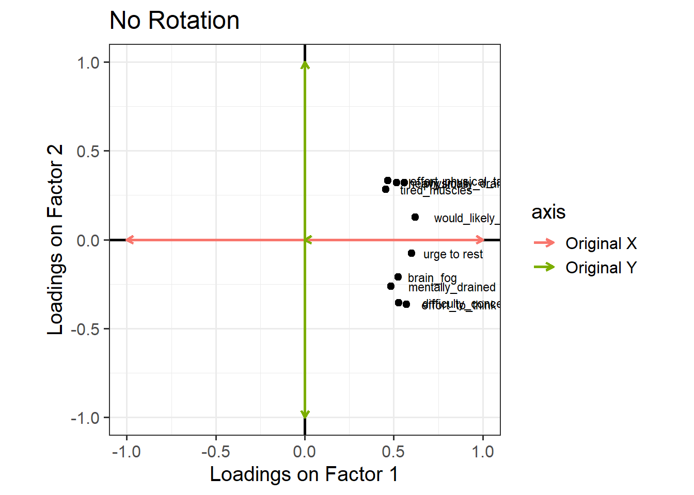
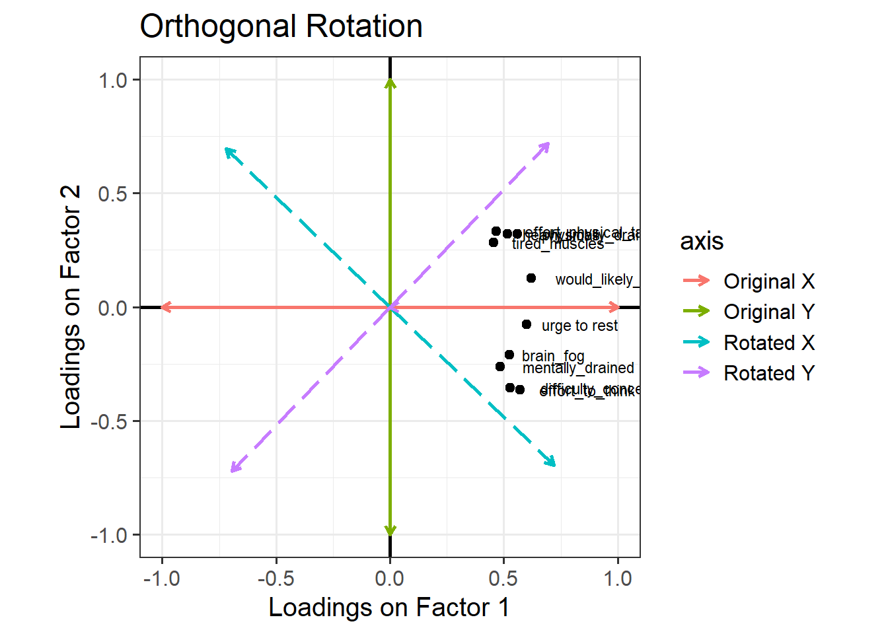
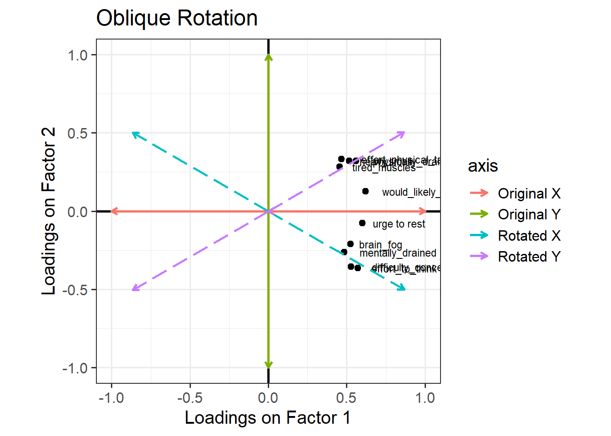

A slightly complex part of factor analysis that we need to devote some time to is the idea of “rotations”.
At the very highest level, when we talk about applying rotations in EFA, we are doing a procedure that will do one or both of:
try to achieve a clean and ‘simple structure’ to the patterns of factor loadings
allow the latent factors to be correlated
Think back to scaling predictors in a linear model, or choosing different contrast coding schemes. If we convert a continuous predictor to z-scores, or choose between dummy coding or effect coding for a categorical predictor, then all that will change between versions of the model is the model’s coefficients. The data itself does not change, and crucially, the predictions that the model makes (e.g., if you use predict() or emmeans()) also do not change. All that changes is the model’s internal representation of things.
In a similar way, in EFA, we can transform the set of relationships between measured variables and factors (i.e., transform the set of loadings) without changing what the model predicts.1
I feel physically exhausted even after doing minor tasks.
My muscles feel strong and full of energy today.
Mentally, I feel completely drained and empty.
I feel motivated and eager to start new activities.
I have to fight to keep my eyes open during the day.
I feel alert and wide awake when sitting quietly.
If I closed my eyes right now, I would fall asleep instantly.
I feel a strong urge to take a nap.
My reaction times feel incredibly slow.
I find myself staring blankly into space without thinking.
And let’s suppose that we are extracting two factors.
Based on the factor loadings below, which in principle can range from –1 to 1, how would we interpret the dimensions represented by the first factor (ML1) and the second factor (ML2)? (Note that any loading less than 0.3 isn’t shown in the output)
Code
# read in the datatiredq <-read_csv("https://uoepsy.github.io/data/tiredq.csv")# fit the factor model, no rotationtired_fa1 <-fa(tiredq, nfactors=2, rotate ="none", fm="ml")# print the loadingsprint(tired_fa1$loadings, cutoff = .3)
Loadings:
ML1 ML2
difficulty_concentrating 0.526 -0.355
mentally_drained 0.484
brain_fog 0.525
effort_to_think 0.570 -0.365
tired_muscles 0.454
physically_drained 0.560 0.320
heavy limbs 0.516 0.320
effort_physical_tasks 0.467 0.333
would_likely_sleep 0.622
urge to rest 0.600
ML1 ML2
SS loadings 2.863 0.790
Proportion Var 0.286 0.079
Cumulative Var 0.286 0.365
The first factor is associated fairly highly with all 10 variables. So maybe it represents a construct of “general fatigue”? The second factor is even less clear. It only has loadings above 0.3 for three items: it’s negatively associated with mental fatigue, and positively associated with physical fatigue. The resulting concept is kind of awkward to describe: at one end of this factor, you’re physically fatigued but not mentally, and at the other end you are mentally fatigued but not physically. It’s not the clearest idea, especially as when we introduced these questions we actually had a clearer notion (i.e., some questions about mental fatigue, some questions about physical fatigue, and a couple of others)
And this is where rotation comes in. We can transform those sets of loadings in such a way that aims to make each variable load high on to one factor and low on to other factors, without changing the amount of variability we’re explaining.
The result will be factors that are much easier to interpret.
One way to see this rotation is to start by plotting the loadings for each variable on to each factor: Figure 1 (this is only really possible here because we have just two factors, ML1 on the x axis and ML2 on the y axis). All ten variables are positively loaded on Factor 1, and they’re split between positive and negative on Factor 2.

Figure 1: Loadings of each variable onto the two factors (no rotation)
Now, let’s see what happens if we rotate these axes, as in Figure 2. Tilt your head 45 degrees to the right to understand this plot: the dashed purple line is the new y axis (the new “vertical”), and the dashed cyan line is the new x axis (the new “horizontal”). Now, the physical fatigue variables are high on the purple axis, while the mental fatigue variables are high on the cyan axis. Thus, each axis can be more easily interpreted with respect to the variables that load highly on it. We have one factor that seems to represent mental fatigue + sleepiness, and another factor that seems to represent physical fatigue + sleepiness.

Figure 2: Loadings of each variable onto the two factors (orthogonal rotation)
The total variance explained by this rotated solution is just the same as our unrotated solution. We can see this when we run the following R code, where the “varimax” rotation gives us the orthogonal rotation visualised above. Before, the cumulative variance explained after two factors was 0.366 (you can scroll up to double-check), and below, we see that the cumulative variance explained after two factors is still 0.366, even with the rotation. This number tells us that together, these two factors capture 36.6% of the total variance in our data.
Loadings:
ML1 ML2
difficulty_concentrating 0.625
mentally_drained 0.530
brain_fog 0.525
effort_to_think 0.663
tired_muscles 0.519
physically_drained 0.619
heavy limbs 0.589
effort_physical_tasks 0.564
would_likely_sleep 0.359 0.523
urge to rest 0.484 0.362
ML1 ML2
SS loadings 1.833 1.820
Proportion Var 0.183 0.182
Cumulative Var 0.183 0.365
Look at the orthogonal rotation plot (Figure 2) again. When two lines are orthogonal, they are at 90 degrees to one another—that’s what “orthogonal” means. Our starting X and Y axes were orthogonal to one another, and when we choose an orthogonal rotation, our new axes are still orthogonal to one another.
Requiring that the axes be orthogonal means that we’re insisting that there is no correlation between the two factors. In other words, we assume that if someone is high on the mental fatigue dimension, we would have absolutely no idea whether they’re high or low on the physical fatigue dimension. But this feels weird! Surely we’d expect mental and physical fatigue to be correlated?
We can allow factors to be correlated by relaxing the constraint about orthogonal axes. Instead of choosing an orthogonal rotation, we use what’s called an “oblique rotation”. In R code, this means choosing the rotation method “oblimin”. The idea is much the same as the “orthogonal rotation” above, but we don’t have to keep the right angle between the factors:

Figure 3: Loadings of each variable onto the two factors (oblique rotation)
The pattern of factor loadings that emerges now is a lovely clean structure! Each variable is clearly linked to one factor and not as much to the other: for each item, there is only one loading above our cutoff of 0.3. And we’ve let the factors be correlated – so for someone who is high on factor 1 (which now looks like the ‘physical fatigue’ factor) we would also expect them to be high on factor 2 (‘mental fatigue’).
Loadings:
ML2 ML1
difficulty_concentrating 0.659
mentally_drained 0.541
brain_fog 0.515
effort_to_think 0.693
tired_muscles 0.545
physically_drained 0.642
heavy limbs 0.617
effort_physical_tasks 0.602
would_likely_sleep 0.486
urge to rest 0.423
ML2 ML1
SS loadings 1.773 1.710
Proportion Var 0.177 0.171
Cumulative Var 0.177 0.348
In this situation, we also get out the correlation between the factors.2 We can extract the specific values using:
tired_fa3$Phi
ML2 ML1
ML2 1.000 0.497
ML1 0.497 1.000
Rotations & Simple Structures
The idea of rotations in EFA is ultimately to help us get to a solution that “makes more sense”.
Important Note: “makes more sense” here is largely a theory driven idea. We need to think whether the proposed sets of factor loadings fit with what we know about the variables (how they’re worded etc) and the underlying construct that we are trying to measure.
In the discussion of rotations above, we talked about a ‘cleaner’ solution - where each variable tends to have one high loading and the other loadings are small. In essence we are trying to make a pattern that looks a bit like this, in diagrammatic form:
This idea is typically referred to as a “simple structure”, where each variable is “univocal” (it speaks to one factor only, and not to the others). This simplifies the interpretation of factors, making them more distinct and more easily understandable.
type
common methods
what happens
no rotation
rotate = “none”
Tries to maximise loadings on to the first factor
orthogonal rotation
rotate = “varimax”
Keeping factors uncorrelated (orthogonal), tries to maximise the variance of loadings (i.e. have lots of high loadings and lots of low loadings)
oblique rotation
rotate = “oblimin” rotate = “promax”
Tries to find a balance between a simple factor structure and the degree of correlation between factors
Rabbit Hole: Explanation with matrices
Our starting point is, again “outcome = model + error”, and here we remember that the outcome is the correlation matrix, the model is the factor loadings, and the error is the ‘uniqueness’ of each observed variable:
It’s going to be horrendous trying to see it with 10 items, so let’s pretend we have observed five variables, meaning we have a 5x5 correlation matrix, and we’re extracting two factors, so we have two columns of factor loadings. Our original, un-rotated solution is this:
But as it happens, there are infinitely many sets of numbers that we could put in and get out the same values when we do \(\mathbf{\Lambda}\mathbf{\Lambda'}\). Or, if we want to include an additional matrix in our model that specifies how the factors are correlated (we’ll call it \(\mathbf{\Phi}\)), then we have infinitely (again) many more set of values that are numerically equivalent models:
As an example, we could use a different set of values \(\mathbf{\Lambda_{orth}}\) instead of our original \(\mathbf{\Lambda}\) and achieve the same model
For each of these different possible sets of numbers that we could use to be numerically identical, we could write them in terms of our original numbers \(\mathbf{\Lambda}\) and multiplying it by some matrix \(\mathbf{T}\). So we could write:
So our “model” here could be written as \(\mathbf{(\Lambda T)(\Lambda T)'}\). This simplifies to \(\mathbf{\Lambda (T T') \Lambda'}\). The difference between orthogonal and oblique rotations comes in how this transformation matrix \(\mathbf{T}\) works - if \(\mathbf{TT'}\) results in the identity matrix \(\begin{bmatrix} 1 & 0 \\ 0 & 1 \\ \end{bmatrix}\), then this doesn’t change the perpendicularity of our factors. If it doesn’t, then we need to also include the correlation of the factors (\(\mathbf{\Phi}\)) in our model.
Footnotes
In fact, there are infinitely many kinds of transformations that we could apply that would all result in models which make identical predictions! This idea is called “rotational indeterminacy”.↩︎
If you’re a trigonometry fan (I’m not!), the correlation between factors is the cosine of the angle between the axes!↩︎